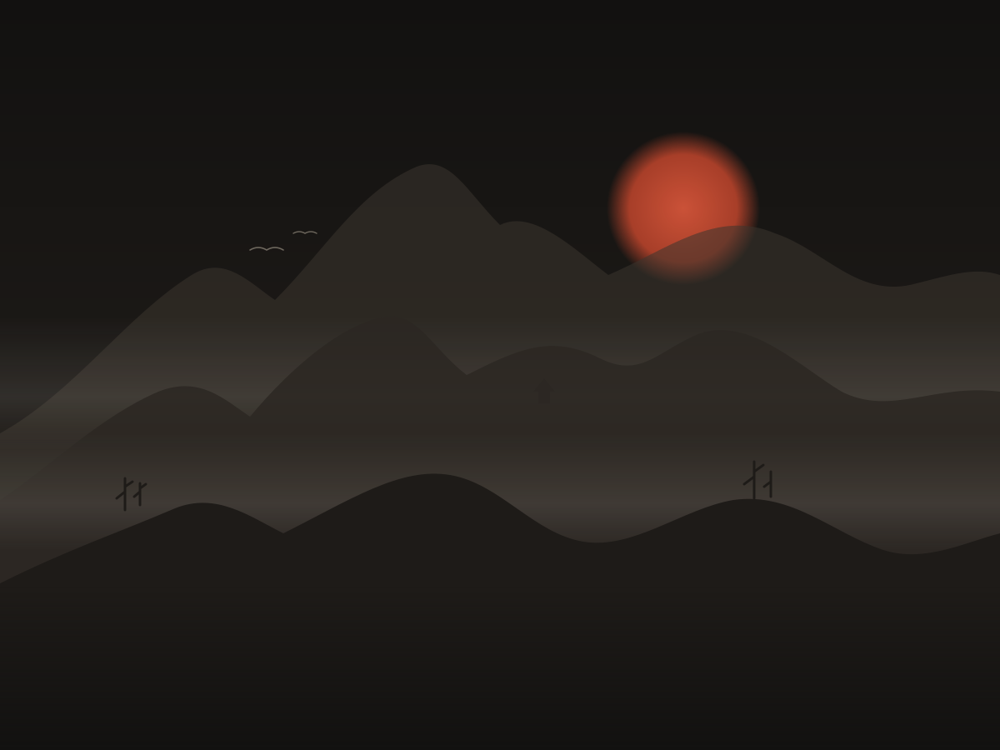

Sống một đời qua từng lựa chọn. Đọc lại nó thành một cuốn tiểu thuyết.

Khung tối để mắt nghỉ. Trang đọc là giấy. Chu sa chỉ dùng cho hành động chính và dấu triện.
Ba họ chữ, đều có đủ dấu tiếng Việt và tải từ Google Fonts.
Mưa trên núi Thanh Vân không rơi xuống mà trôi ngang, như ai đó vắt một tấm lụa ướt qua sườn đá. Vết rạn chạy chéo qua chữ “Vân” khắc trên mặt ngọc. Đêm qua nó chưa có.
Khổ đọc tối đa 66 ký tự · thụt đầu dòng 1.4em · lời thoại mở đầu bằng “- ” (gạch ngang + khoảng trắng), không dùng “—”Rê chuột thử: nút quét mực, thẻ nhấc lên và hiện dấu triện, lựa chọn có ánh mực lướt.
Giọt mực thay mũi tên, chuyển chu sa khi bấm được; vầng mực đi theo, nở to trên nút. Chỉ dùng khi có chuột: không dùng trên màn cảm ứng, và vầng mực tắt khi người dùng bật giảm chuyển động.
Chờ AI: giọt mực loang trong nước. Không vòng quay, không thanh phần trăm giả, không đoán trước thời gian chờ.
Dưới chân nó, tro vẫn còn ấm.
Chữ hiện dần theo cụm, như mực thấm vào giấy: mờ → nét. Người đọc chạm để hiện hết ngay. Khi bật giảm chuyển động, chữ hiện đủ ngay, không con trỏ nhấp nháy.